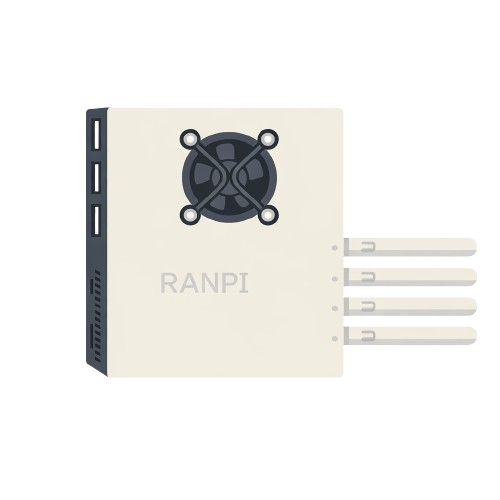
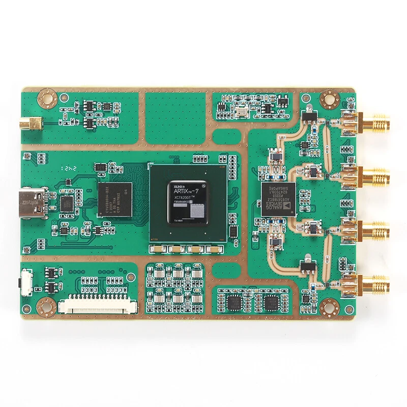
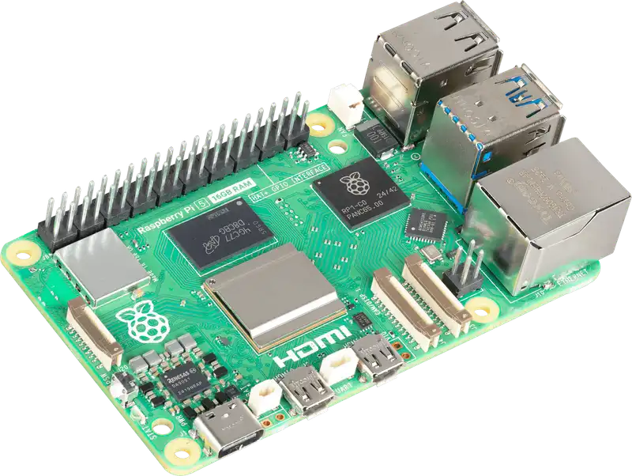

Private LTE. Portable. Self-hosted.

The problem started when I got my first private LTE network running. I had an Open5GS core, srsRAN on the radio side, a CBRS-band SDR, and a SIM I provisioned myself. I walked across my property and the UE stayed connected. Packets were flowing. It worked.
Then I asked the obvious question: how good is it, really?
I had no way to answer it. Not in any meaningful sense. I could read RSRP from a log file. I could stand in one spot and squint at numbers scrolling past a terminal. But I had no coverage map. No survey path. No way to compare corner to corner or floor to floor. The tools that network engineers reach for in the enterprise world — Ekahau, AirMagnet, spectrum analyzers with RF capture — they're built for Wi-Fi, cost thousands of dollars, and have no concept of an LTE PHY layer you assembled yourself.
Commercial LTE drive test software exists. It's what carriers use. It's also what costs more than most home lab setups combined. None of it expects you to be running an open-source stack.
There was no RF survey tool designed for a person who built their own LTE network on a shelf. So I built one.
I started by writing a measurement utility that hooked directly into the srsRAN PHY layer and pulled RSSI, RSRP, and RSRQ out in a structured format. That became its own project — the LTE Cell Measurement Utility. But raw JSON measurements are still just numbers. I needed something to turn walking around a building into a picture.
That's where OpenCellSurvey came from. I built a web-based survey platform that consumed those measurements, paired them with GPS coordinates, and painted them onto a map. Real coverage visualization. The kind of output you'd get from a carrier drive test, running on a Raspberry Pi in my lab.
RANPI is the broader platform. The name is what it says: a RAN on a Pi. A compact, portable, self-contained cellular lab built from SDR hardware, open-source software, and the kind of stubbornness that makes most people say "why would you even try that?" It's the platform I wish existed when I started.
Before you can survey coverage, you need a network running. RANPI is a self-hosted web application that puts a control panel around srsRAN — handling process management, configuration editing, and live system monitoring from a browser on port 8000. It runs as a systemd service on the same device as the radio stack. The front-end of RANPI was Claude assisted, no shame in that. I am not a good web developer, and if I can increase efficiency by using an AI co-pilot to handle the UI layer, then that's what I'm going to do. The back-end is all me, though.
The interface supports both 4G eNB and 5G gNB workflows. Start and stop srsRAN processes, edit configuration files directly through the UI, watch system metrics in real time, and monitor UE telemetry — all without touching a terminal once the system is set up. It works alongside OpenCellSurvey: RANPI manages the radio, OCS measures what it's doing.
OpenCellSurvey (OCS) is the RF survey layer of RANPI. It's a self-hosted web application that provides live LTE signal measurement visualization, GPS-tracked survey paths, and exportable HTML reports.
The measurement workflow is driven by the LTE Cell Measurement Utility, which decodes MAC and PHY layer frames from srsRAN to produce live signal data. OCS takes that data and puts it on a map.
RANPI is designed to be physically compact and reproducible. The enclosures for the Raspberry Pi 5 and the B210 LibreSDR clone are custom-designed to house both units together in a portable form factor.

Buy on eBay →
Buy on Raspberry Pi →RANPI v2.6 is the current release. The management interface, config editor, process manager, and UE telemetry are all functional. OpenCellSurvey is in its initial public release alongside it — the two applications are designed to run together on the same device.
This is a lab-grade platform intended for private LTE and CBRS testing, field survey experimentation, and learning how carrier-grade cellular infrastructure actually works from the PHY layer up. It is not a product. It is what happens when a network engineer gets tired of having no tools.